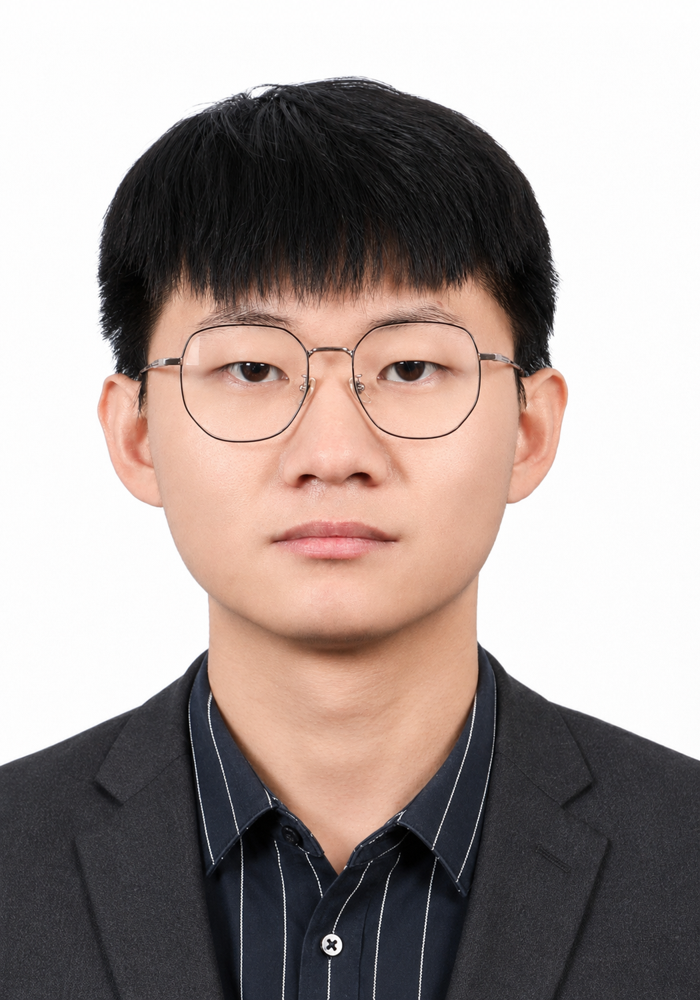

Lianjin Yu 于连进
I am currently an undergraduate student in the Beijing Dublin International College, Beijing University of Technology (BJUT), where I am fortunate to be supervised by Prof. Gengyu Lyu.
Research Interests: Multi-View learning.
Email: 2136678650@qq.com
Education
B.E., Software Engineering, Beijing University of Technology, 2023—2027.
Selected Publications
-
Hypergraph-Based Unaligned Multi-View Clustering via Cluster-Aware Feature Extraction
ACM SIGKDD Conference on Knowledge Discovery and Data Mining (ACM SIGKDD), 2026. (CCF-A)
-
Cooperative Multi-View Graph Learning via High-Rank Tensor Specificity
International Joint Conference on Artificial Intelligence (IJCAI), 2026. (CCF-B)
Awards
Provincial Third Prize, 15th National Market Survey and Analysis Competition